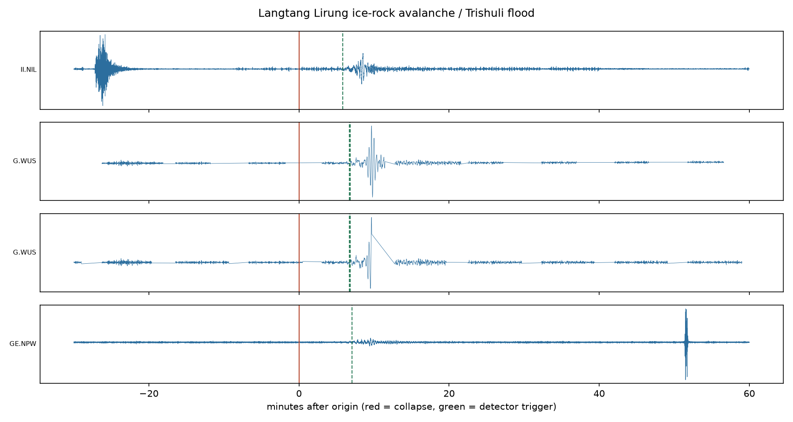

An open seismic watch for the world's high mountains — detecting glacier collapses, ice-rock avalanches, and debris flows on public seismic feeds within minutes, so no valley is ever again the last to know.
● CONNECTING…
detector: awaiting first verdict…
Ground motion, as the watch daemon hears it — the absolute envelope of the last ten minutes at each open broadband station it streams, republished continuously with the full audit trail in the public data repository.
Waiting for the daemon's first waveform publish…
No detector should ever feed real alerting without a measured false-alarm record. So every candidate this watch flags — true, false, or ambiguous — is logged permanently and published here, including the embarrassing ones. Trust is built in public or not at all.
The live watch is in pre-launch calibration; the public ledger begins with the first continuous deployment.
On 26 August 2026, part of a mountain near Langtang Lirung fell 1,200 metres and sent a flood down the Trishuli valley at 180 km/h. More than a thousand people died; thousands more are missing. The collapse rang seismometers on every continent at 08:37 local time. Nepal's first alert went out at 09:15 — triggered by a phone call, not an instrument. No machine anywhere was listening.
The science for listening exists — automated seismic detection of catastrophic flows was validated on the 2021 Chamoli disaster and published in Science. No operational system runs it. Third Pole Watch is the smallest thing that changes that.
Replaying the 26 Aug 2026 collapse from public waveform archives, on four open stations, with uncalibrated v0 thresholds:
== COINCIDENT DETECTION at T+349s (3 stations: II.NIL, G.WUS, GE.NPW) Actual first SMS alert: T+2280s (+38 min). Margin recovered: 32 minutes.

Open real-time seismic streams (GEOFON, EarthScope, community Raspberry Shake stations) around the Himalayan arc, scanned continuously. Seismic waves cross borders regardless of politics.
Mass movements radiate long-period energy with emergent onsets and long durations — unlike impulsive tectonic earthquakes. The v0 discriminator is an open, documented heuristic; calibrating it into a real classifier is the collaboration this project exists to start.
Every candidate goes to an append-only public ledger with a human verdict. The long-run score is the argument for ever connecting detection to real alerting.
Unconfirmed "check your sources" signals to subscribed humans with their own duty of care: hydropower control rooms (898 workers were underground in tunnels on 26 August), trekking operators, researchers. Official public warnings remain the role of national agencies — by design.
Third Pole Watch is not an official warning service and must never be treated as one. Signals are unconfirmed research output. Official alerts come from national authorities — in Nepal, the Department of Hydrology and Meteorology (DHM) and NDRRMA.
The seismic watch is the first organ of a four-layer system, each layer validated somewhere on Earth but never assembled where the ice is: satellite radar screening that finds unstable slopes weeks-to-months out (the precursors of Chamoli 2021 and Blatten 2025 were both visible from orbit for years) → cheap redundant ground sensors at ranked sites (the layer that let Switzerland evacuate Blatten nine days before its glacier fell — one death) → the seismic tripwire → alerts that reach every phone via cell broadcast, the technology already built into every device on Earth.
Openly, as a public good, with national agencies holding the alert authority — and with the operations funded to outlive any grant cycle, because the graveyard of Himalayan early-warning pilots is full of systems that worked until the donor left.
Contact: vivek@thirdpole.watch · github.com/vivekchand/third-pole-watch